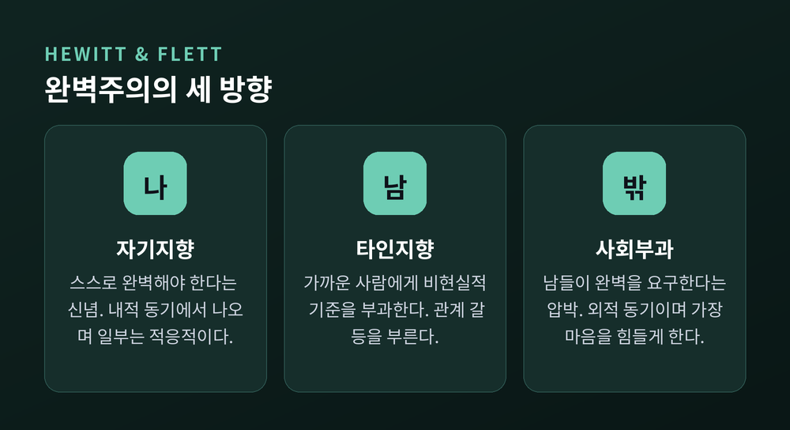
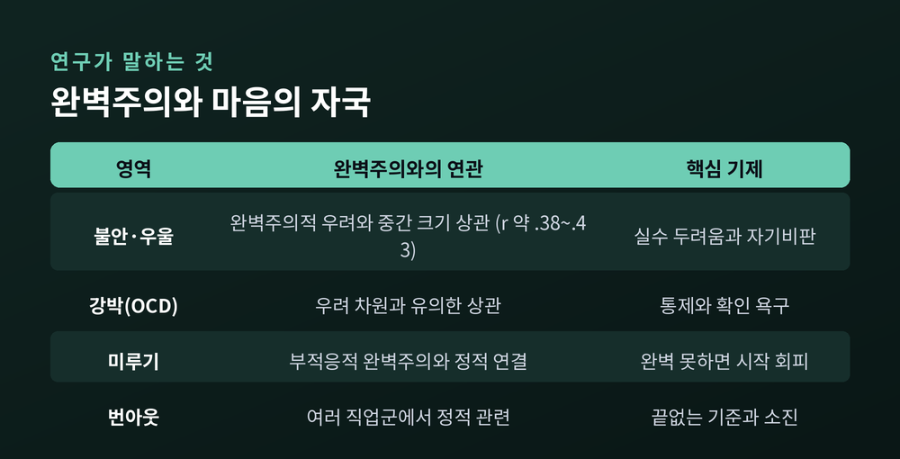
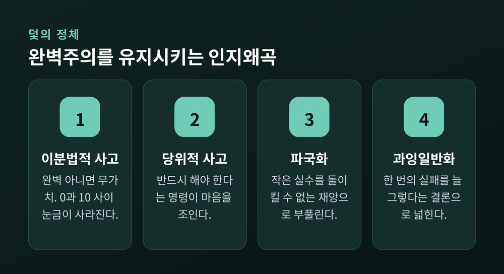
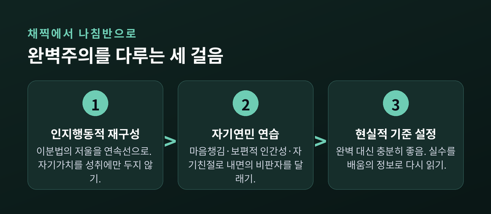

무엇이 나를 밀고, 무엇이 나를 주저앉히는가
완벽주의를 두고 우리는 흔히 두 갈래로 갈립니다. 누군가는 그것을 성취의 원동력으로 칭찬하고, 누군가는 마음을 갉아먹는 병으로 여깁니다. 이번 글에서는 완벽주의의 두 얼굴을 심리학 연구에 기대어 정리해 보겠습니다. 무엇이 나를 앞으로 밀고, 무엇이 나를 주저앉히는지 그 경계를 함께 들여다봅니다.
먼저 짚을 것이 있습니다. 완벽주의는 단일한 성격이 아닙니다.
최근 심리학은 완벽주의를 두 개의 상위 차원으로 나눕니다. 하나는 ‘완벽주의적 노력’입니다. 높은 기준을 세우고 탁월함을 추구하는 힘입니다. 다른 하나는 ‘완벽주의적 우려’입니다. 실수를 지나치게 두려워하고, 자신의 수행을 가혹하게 평가하는 마음입니다.
이 둘은 결이 다릅니다. 노력은 성장과 만족으로 이어지기도 합니다. 반면 우려는 불안과 자기비판으로 기웁니다. 흥미로운 점은 여기 있습니다. 두 차원이 종종 정반대의 결과로 갈라진다는 것입니다.
예전에는 완벽주의를 그저 ‘좋거나 나쁜’ 하나의 성향으로 봤습니다. 지금은 다릅니다. ‘높은 기준’ 자체가 문제인 것이 아니라, 거기에 붙는 ‘실수에 대한 두려움’이 문제라는 쪽으로 이해가 옮겨왔습니다.
한 연구는 이렇게 정리합니다. 가장 문제가 되는 조합은 ‘높은 노력에 높은 우려가 겹칠 때’입니다. 반대로 ‘높은 노력에 낮은 우려’를 지닌 사람은 가장 좋은 결과를 냅니다. 목표를 높이 세우되 실수에 덜 흔들리는 사람. 그 사람이 완벽주의의 밝은 얼굴을 봅니다.
완벽주의는 ‘누구를 향하는가’로도 나뉩니다. 심리학자 휴잇(Hewitt)과 플렛(Flett)이 1991년 제시한 다차원 모델이 대표적입니다. 이들은 완벽주의를 세 방향으로 구분했습니다.
첫째, 자기지향 완벽주의입니다. 스스로 완벽해야 한다는 신념입니다. 자신에게 높은 기준을 부과하며, 주로 내적 동기에서 나옵니다. 일부는 건강하게 작동합니다.
둘째, 타인지향 완벽주의입니다. 가까운 사람에게 비현실적 기준을 들이대고 엄격하게 평가하는 태도입니다. 관계의 갈등을 부르기 쉽습니다.
셋째, 사회부과 완벽주의입니다. ‘남들이 나에게 높은 기준을 요구하고, 그것을 충족해야만 인정받는다’는 신념입니다. 주로 외적 동기에서 비롯되며, 세 유형 가운데 가장 마음을 힘들게 합니다.

주목할 대목이 하나 있습니다. 커런(Curran)과 힐(Hill)이 1989년부터 2016년까지 미국·캐나다·영국 대학생 4만여 명의 자료를 분석했습니다. 결과는 분명했습니다. 최근 세대일수록 세 유형이 모두 높아졌습니다. 특히 사회부과 완벽주의는 33퍼센트나 늘었습니다. 자기지향은 10퍼센트, 타인지향은 16퍼센트 증가했습니다.
‘남들이 나에게 완벽을 요구한다’는 압박이 가장 가파르게 커진 셈입니다. 안전하고, 연결되고, 가치 있다고 느끼기 위해 완벽해야 한다는 감각. 그 무게가 세대를 거치며 무거워지고 있습니다.
완벽주의의 어두운 얼굴은 여러 증상과 맞닿아 있습니다. 연구자들은 완벽주의를 여러 장애를 가로지르는 ‘범진단적’ 요인으로 봅니다.
2023년의 한 메타분석은 성인을 대상으로 완벽주의와 불안·우울·강박 증상의 관계를 확인했습니다. 여기서도 ‘완벽주의적 우려’가 심리적 고통과 더 강하게 이어졌습니다. 실수를 두려워하는 마음이 클수록 불안과 우울이 함께 자랐습니다.

미루기도 여기 얽혀 있습니다. 얼핏 완벽주의와 미루기는 반대처럼 보입니다. 그러나 부적응적 완벽주의는 미루기와 정적으로 연결됩니다. 원리는 이렇습니다. ‘완벽하게 해낼 수 없다면 아예 시작하지 않겠다.’ 실수에 대한 두려움이 시작 자체를 막아버립니다.
번아웃과도 무관하지 않습니다. 여러 직업군을 살핀 메타분석들은 완벽주의와 소진 사이의 연결을 보고합니다. 끝없이 높은 기준을 스스로에게 들이대는 사람은, 결국 연료가 바닥나는 지점에 이르기 쉽습니다.
완벽주의를 계속 굴러가게 만드는 사고 습관이 있습니다. 그 중심에 ‘이분법적 사고’가 있습니다.
이분법적 사고는 상황과 자신을 극단으로 나눠 보는 인지왜곡입니다. 흑백논리라고도 부릅니다. 완벽주의에서 가장 특징적인 형태는 이것입니다. “완벽하거나, 아니면 무가치하거나.” 0과 10 사이의 눈금이 사라진 상태입니다.
여기에 ‘당위적 사고’가 따라붙습니다. “반드시 ~해야만 한다”는 명령입니다. 작은 실수를 파국으로 부풀리는 습관도 함께 옵니다.

이 사고들은 하나의 목소리로 뭉칩니다. 심리학에서는 이를 ‘내면의 비판자’라 부릅니다. 가혹하고 낙담시키는 목소리입니다. 많은 사람이 이 비판자를 채찍처럼 여깁니다. 나를 더 나아지게 만들 거라고 믿습니다.
그러나 연구는 다르게 말합니다. 내면의 비판자는 개선의 동기가 되지 못합니다. 오히려 부적절감과 불안, 우울을 남깁니다. 인지행동치료(CBT)는 이 지점을 겨눕니다. 완벽주의의 핵심은 ‘자기 가치를 오직 성취에만 매다는 태도’라는 것입니다. 성취가 곧 나의 값이 되어버리면, 한 번의 실수가 존재 전체를 흔듭니다.
다행히 완벽주의는 다룰 수 있습니다. 근거가 쌓인 방법들이 있습니다.
첫째, 인지행동적 접근입니다. 완벽주의를 겨눈 CBT는 열다섯 편의 무작위 대조 시험에서 완벽주의를 낮추는 효과가 확인됐습니다. 불안·우울·섭식 문제에도 긍정적으로 작용했습니다. 이분법의 저울을 연속선으로 바꾸고, 자기 가치를 성취 한 곳에만 두지 않도록 생각을 다시 짜는 작업입니다.
둘째, 자기연민입니다. 크리스틴 네프(Kristin Neff)의 연구는 자기연민이 부적응적 완벽주의와 반대 방향으로 움직인다고 말합니다. 자기연민이 높은 사람도 높은 목표를 세웁니다. 다만 늘 도달하지 못할 수 있음을 인정하고 받아들입니다. 자기연민은 세 가지로 이뤄집니다. 마음챙김, 그리고 ‘나만 그런 게 아니다’라는 보편적 인간성, 마지막으로 자기친절입니다.

자기비판보다 자기연민이 변화를 더 오래 지속시킵니다. 실수에서 더 잘 배우고, 덜 낙담하며, 남의 시선보다 내 안의 동기에 집중하게 되기 때문입니다.
셋째, 현실적 기준 설정입니다. 목표를 ‘완벽’이 아니라 ‘충분히 좋음’으로 옮기는 연습입니다. 실수를 실패의 증거가 아니라 배움의 정보로 다시 읽는 태도이기도 합니다. 완벽하지는 않아도, 이 방향이 마음을 훨씬 가볍게 합니다.
정리하면 이렇습니다. 완벽주의에는 두 얼굴이 있습니다. 기준을 높이는 노력은 나를 앞으로 밀고, 실수를 두려워하는 우려는 나를 붙잡습니다. 갈림길은 기준의 높이가 아니라, 실수를 대하는 태도에 있습니다.
“완벽해지려 애쓰기보다, 불완전한 나에게 조금 더 다정해지는 것.”
완벽하지 않아도 괜찮냐고 스스로에게 묻는다면, 저는 망설임 없이 그렇다고 답하겠습니다.